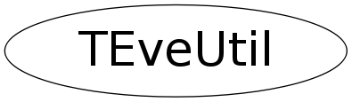

Function Members (Methods)
public:
Data Members
private:
| static TObjArray* | fgDefaultColors |
Class Charts
{kind=link}
{kind=link}
{kind=link}
{kind=link}

Function documentation
void SetupEnvironment()
void ColorFromIdx(Color_t ci, UChar_t* col, Bool_t alpha = kTRUE)
void ColorFromIdx(Color_t ci, UChar_t* col, Char_t transparency)
Fill col with RGBA values corresponding to index ci and transparency. ROOT's indexed color palette does not support transparency.
void ColorFromIdx(Float_t f1, Color_t c1, Float_t f2, Color_t c2, UChar_t* col, Bool_t alpha = kTRUE)
Fill col with weighted RGBA values corresponding to color-indices c1 and c2. If alpha is true, set alpha component of col to 255.
Color_t* FindColorVar(TObject* obj, const char* varname)
Find address of Color_t data-member with name varname in object obj. This is used to access color information for TGListTreeItem coloration from visualization macros that wrap TObjects into TEveElementObjectPtr instances.
void SetColorBrightness(Float_t value, Bool_t full_redraw = kFALSE)
Tweak all ROOT colors to become brighter (if value > 0) or darker (value < 0). Reasonable values for the value argument are from -2.5 to 2.5 (error will be printed otherwise). If value is zero, the original colors are restored. You should call TEveManager::FullRedraw3D() afterwards or set the argument full_redraw to true (default is false).
Bool_t IsU1IntervalContainedByMinMax(Float_t minM, Float_t maxM, Float_t minQ, Float_t maxQ)
Return true if interval Q is contained within interval M for U1 variables. It is assumed that all values are within the [-2pi, 2pi] interval and minM <= maxM & minQ <= maxQ.
Bool_t IsU1IntervalOverlappingByMinMax(Float_t minM, Float_t maxM, Float_t minQ, Float_t maxQ)
Return true if interval Q is overlapping within interval M for U1 variables. It is assumed that all values are within the [-2pi, 2pi] interval and minM <= maxM & minQ <= maxQ.
Float_t GetFraction(Float_t minM, Float_t maxM, Float_t minQ, Float_t maxQ)
Get fraction of interval [minQ, maxQ] in [minM, maxM]
Bool_t IsU1IntervalContainedByMeanDelta(Float_t meanM, Float_t deltaM, Float_t meanQ, Float_t deltaQ)
Bool_t IsU1IntervalOverlappingByMeanDelta(Float_t meanM, Float_t deltaM, Float_t meanQ, Float_t deltaQ)
TEvePadHolder& operator=(const TEveUtil& )